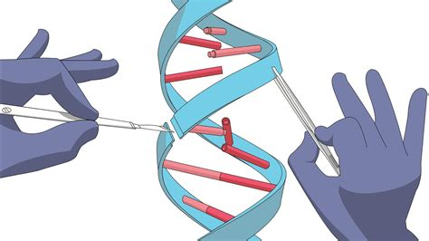

Blog Rooster
Genetische Gevangenen: Hoe We Onze Kinderen Beroven van Hun Autonomie
Ouders kunnen kiezen of hun kind slim wordt, sportief, of nooit depressief zal zijn. Klinkt als een sciencefictionfilm? Toch wordt dit steeds meer werkelijkheid door nieuwe technieken zoals CRISPR . Maar moeten we dit eigenlijk wel willen? Wat gebeurt er met de vrijheid van kinderen als wij hun eigenschappen vooraf bepalen?
.................................................................
Ouders willen het beste – maar tegen welke prijs?Ik snap het wel: als ouder wil je dat je kind gezond en gelukkig is. Niemand wil dat zijn kind een erge ziekte krijgt. Maar wat als je meer gaat aanpassen dan alleen gezondheid? Wat als je kiest hoe je kind er uitziet, hoe slim het is of welk karakter het krijgt?
Dat is het moment waarop we een grens overgaan. Het kind heeft hier geen stem in. Jij maakt keuzes voor iemand die er nog niet is – en die er zijn hele leven mee moet leven. Is dat eerlijk?
Perfecte kinderen bestaan nietSommige landen, zoals de VS en China, staan al toe dat ouders embryo’s kiezen met ‘goede’ genen. Denk aan een kind dat een grotere kans heeft op succes op school of minder snel ziek wordt. Er zijn zelfs lijsten met gewenste eigenschappen. Maar wie bepaalt wat “goed” is?
De Amerikaanse filosoof Michael Sandel zegt: als we kinderen gaan ontwerpen, doen we alsof we beter weten wat goed voor hen is. We accepteren onze kinderen dan niet meer zoals ze zijn, maar willen ze verbeteren. Kinderen worden zo een project in plaats van een persoon.
Wat als we juist lijden kunnen voorkomen?Sommige mensen zeggen: “Maar als we een ziekte kunnen voorkomen, dan moeten we dat toch doen?” Daar ben ik het deels mee eens. Als een behandeling voorkomt dat een kind ernstig ziek wordt, is dat iets goeds.
Maar er is een verschil tussen iemand genezen en iemand ontwerpen. Het eerste helpt iemand die er al is. Het tweede bepaalt hoe iemand zal zijn. En dat laatste tast de vrijheid van het kind aan om zelf te kiezen wie hij of zij wil zijn.
Wat doet dit met een kind?Stel je bent zo’n ‘gemaakt’ kind. Hoe zou het voelen om te weten dat je ouders jouw eigenschappen hebben gekozen? Wat als je niet zo presteert als ze gehoopt hadden? Zou je dan denken dat je hen teleurgesteld hebt?
Uit onderzoek blijkt dat kinderen die op deze manier zijn geselecteerd, meer druk kunnen voelen. Ze moeten ‘waar maken’ wat er voor hen is gekozen. Dat is niet eerlijk. Elk kind moet zich vrij kunnen voelen om zijn eigen weg te gaan.
Tijd om na te denkenWe kunnen tegenwoordig heel veel met genetische technieken. Maar moeten we alles doen wat kan? Het leven is niet perfect, en dat is juist wat het menselijk maakt. Willen we echt een wereld waarin kinderen moeten voldoen aan het plaatje van hun ouders?
Laten we voorzichtig zijn. Gebruik genetische technieken om ziektes te voorkomen, maar niet om het perfecte kind te maken. Ieder kind verdient het recht op een eigen, open toekomst – zonder dat iemand anders die al voor hem of haar heeft ingevuld.
01-juni-2025 Vincent Geerman© Meer Info Voor Jouw. All Rights Reserved. Designed by Mark J.L koopmans